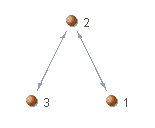

Network
Viewer | Edge | Edge Separator
Network
Viewer | Edge | Edge Separator
Asks for a positive integer representing the edge separation distance (in pixels).
The edge separation distance refers to the distance between two parallel edges (that is, edges connecting the same pair of nodes but having opposed orientations). In the network below, the edge separation value is 2 pixels:

When that distance is zero, the two edges are rendered as a single line:

There is no upper limit here, but try and avoid separation values higher than the width of a node face, as that might create odd images.
See also: